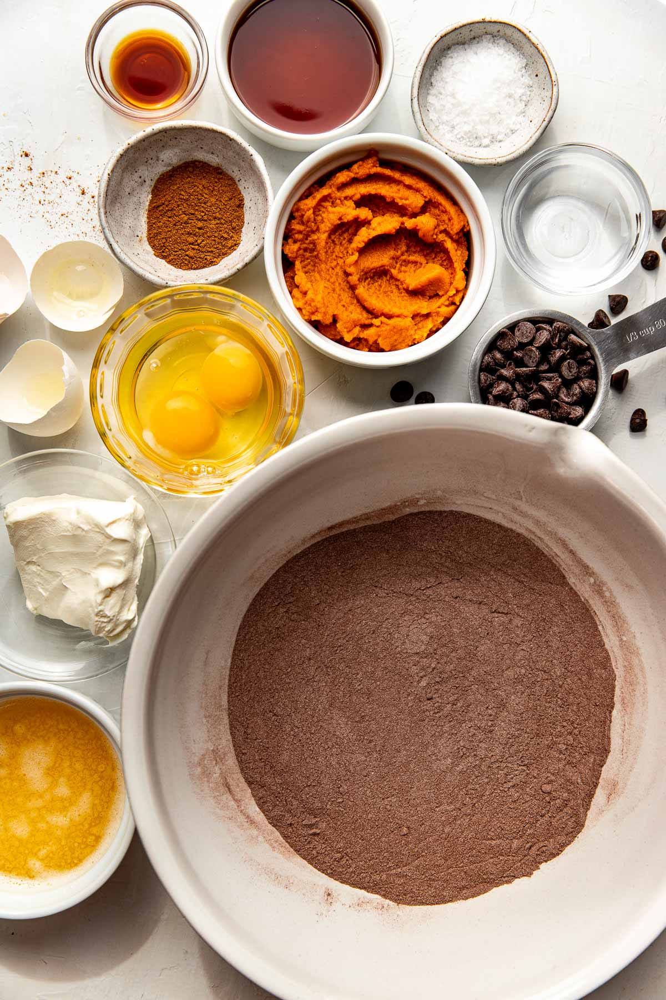
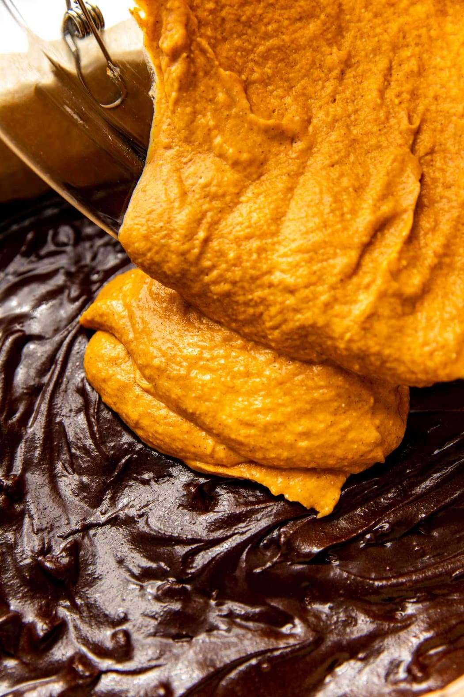
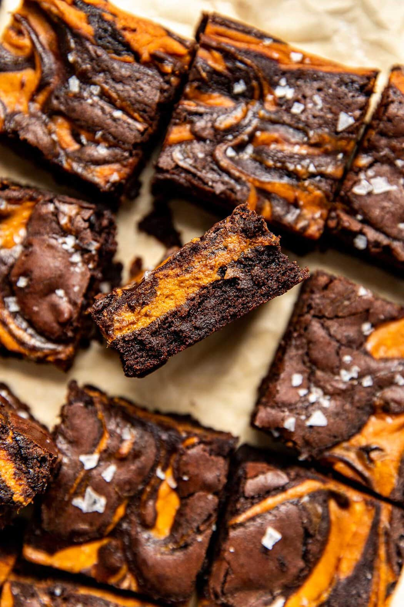

Ingredients
Directions
- Preheat the oven to 350℉. Line a 9×9 inch baking pan with parchment paper; set aside.
- In a mixing bowl, prepare the brownie batter according to the package instructions. Stir in the chocolate chips; set aside.
- In another mixing bowl, gently beat the the cream cheese with a hand mixer until smooth. Add the pumpkin, maple syrup, pumpkin pie spice, and vanilla; mix until well combined with the hand mixer.
- To the prepared baking pan, add about 3/4 of the brownie batter and spread it out with a spatula.
- Then add the pumpkin-cream cheese batter over the brownie batter and spread it out with a spatula.
- Add the remaining brownie batter over the pumpkin layer in about 9 small spoonfuls. Swirl the batters together using a knife.
- Bake for 45-50 minutes or until toothpick inserted in the center comes out clean. Top with flakey salt.
- Let cool on a wire rack before cutting into 16 brownies.